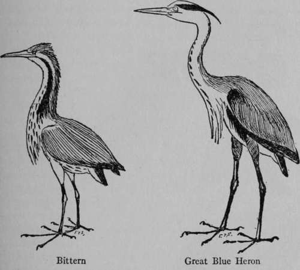
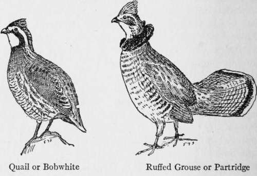
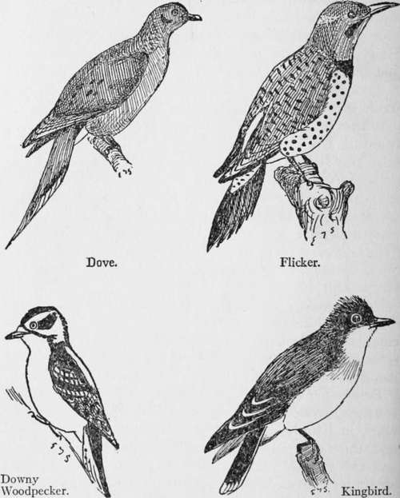
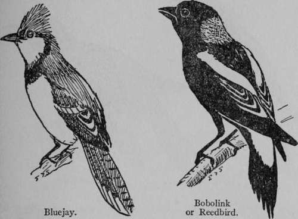
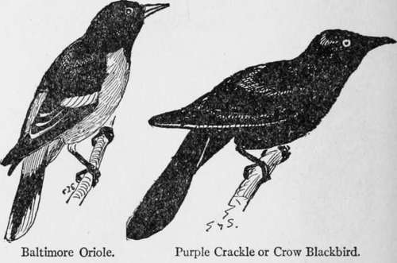

Natural History. Part 2
Description
This section is from the book "The Book Of Woodcraft", by Ernest Thompson Seton. Also available from Amazon: The Book of Woodcraft.
Natural History. Part 2
Swan
There are two kinds of Swan found in America: The Trumpeter (Olor buccinator), which is almost extinct, is very large and has a black bill, and the Whistling Swan (Olorcolumbi-anus), which is smaller - about five feet long and seven feet across. Its plumage is pure white; its bill black, with a yellow spot near the eye. It is found generally throughout North America but is rare now.
Bittern (Botaurus Lengtiginosus)
This bird of marshes is about twenty-eight inches long and can stand nearly three feet high. Its general color is warm yellowish brown splashed with dark brown. The black mark on the side of the neck is a strong feature, and its bright green legs and beak are very distinctive. It is famous for its guttural call notes in the marshes, and is found throughout North America up to about latitude 60 in the interior.
Great Blue Heron (Ardea Herodias)
This bird is commonly called Blue Crane. Its great size will distinguish it. In general it is blue-gray above, white below; head, white, with black hind head, crest and marks on neck, and shoulders. Its thighs are chestnut. It is found throughout North America to the limit of heavy timber.
Quail Or Bobwhite (Colinus Virginianus)
This famous and delicate game bird is about ten inches long. Its plumage is beautifully varied with reddish brown, lilac, and black markings, on a white ground. Its whistle sounds like "Bob White." It is found in eastern North America up to Massachusetts and South Ontario.
Ruffed Grouse Or Partridge (Bonasa Umbellus)
It is known by its mottled and brown plumage, its broad and beautiful fan tail, and the black ruffs on each side of the neck. It is noted for its drumming, which is usually a love song - a call to its mate. Found in the heavy woods of North America, north of the Gulf States.
Dove (Zenaidura Macroura)
This is an abundant inhabitant of the farming country as far north as wheat is now grown. It is about twelve inches long, and known by its pigeon-like look, and its long wedge-shaped tail, with black and white marks on the feathers. Its breast is soft purplish gray. Its extinct relation, the once plentiful Passenger Pigeon, was eighteen inches long and had a reddish breast.
Downy Woodpecker (Dryobates Pubescens)
About six and and a half inches long, black and white. In the male the nape is red, the outer tail feathers white, with black spots. Carefully distinguish this from its large relation the Hairy Woodpecker which is nine and a half inches long and has no black spots on the white outer tail feathers. A familiar inhabitant of orchards the year round, it is found in woods throughout eastern North America.
Flicker Or Highhole (Colaptes Auratus)
This large and beautiful woodpecker is twelve inches long. Its head is ashy gray behind, with a red nape in the neck, and brown-gray in front. On its breast is a black crescent. The spots below and the little bars above are black, and the under side of wings and tail are bright yellow. The rump is white. Its beautiful plumage and loud splendid "clucker" cry make it a joy in every woodland. It is found throughout North America, east of the Rockies up to the limit of trees.
Ruby-Throated Hummingbird (Trochilus Colubris)
Every one knows the Hummingbird. The male only has the throat of ruby color. It is about four inches long from tip of beak to tip of tail. This is the only Hummingbird found in the Northern States or Canada east of the Prairies.
Kingbird (Tyrannus Tyrannus)
This bird is nearly black in its upper parts, white underneath, and has a black tail with white tip. Its concealed crest is orange and red. It is eight and a half inches long. Famous for its intrepid attacks on all birds, large and small, that approach its nest, it is found in North America east of the Rockies, into Southern Canada.
Bluejay (Cyanocitta Cristato)
This bird is soft purplish blue above, and white underneath. The wings and tail are bright blue with black marks. It is found in the woods of America east of the plains to about latitude 55. The Bluejay is a wonderful songster and mimic, but it is mischievous - nearly as bad as the crow indeed.
Common Crow (Corvus Brachyrhynchos)
The Crow is black from head to foot, body and soul. It is about eighteen inches long and thirty wide. It makes itself a nuisance in all the heavily wooded parts of E. North America.
Bobolink Or Reedbird (Dolichonyx Oryzivorus)
This bird is about seven and a half inches long. The plumage is black and white, with brown or creamy patch on nape; and the tail feathers all sharply pointed. The female, and the male in autumn, are all yellow buff with dark streaks. Though famous for its wonderful song as it flies over the meadows in June, it is killed by the thousands to supply the restaurants in autumn and served up under well as its gorgeous plumage and ringing song, it is abundant in Eastern North America in open woods up to Northern Ontario and Lake Winnipeg.
Purple Crackle Or Crow Blackbird (Quiscalus Quiscala)
This northern bird of paradise looks black at a distance but its head is shiny blue and its body iridescent. It is twelve inches long. When flying it holds its long tail with the edge raised like a boat, hence "boat tail." In various forms it is found throughout the eastern States, and in Canada up to Hudson Bay.
Continue to:
Tags
bookdome.com, books, online, free, old, antique, new, read, browse, download